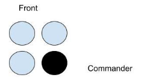
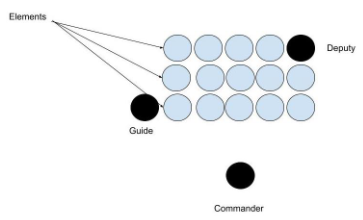
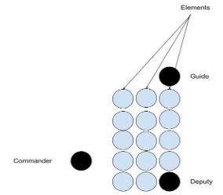
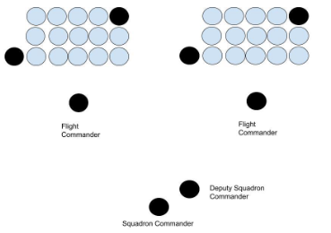

Detail: Formation of two to four cadets, including the cadet in charge. In formations with two or four cadets, the formation is properly sized and the tallest cadet in the right rear position will command the formation.
Flight: Formation of five or more cadets. This includes a designated flight leader. A Flight can be in Line or Column.
Line: Cadets form three elements deep facing the flight commander. The deputy flight commander is positioned in the back rear of the flight. The flight can have infinite columns left and right.
Column: Cadets remain in the same position with the exception of the guide, who moves in front of the third element.
Squadron: Formation of 2 Flights or more by two Flight Commanders and commanded by a Deputy Squadron Commander and Squadron Commander Flights will fall in 3 deep and the distance between each flight will be 3 steps away from the Guidon and Deputy flight commander.
